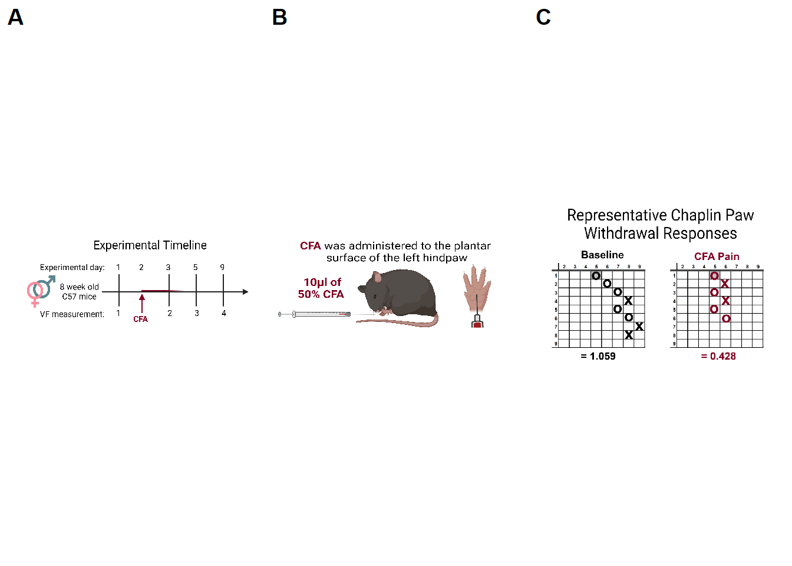
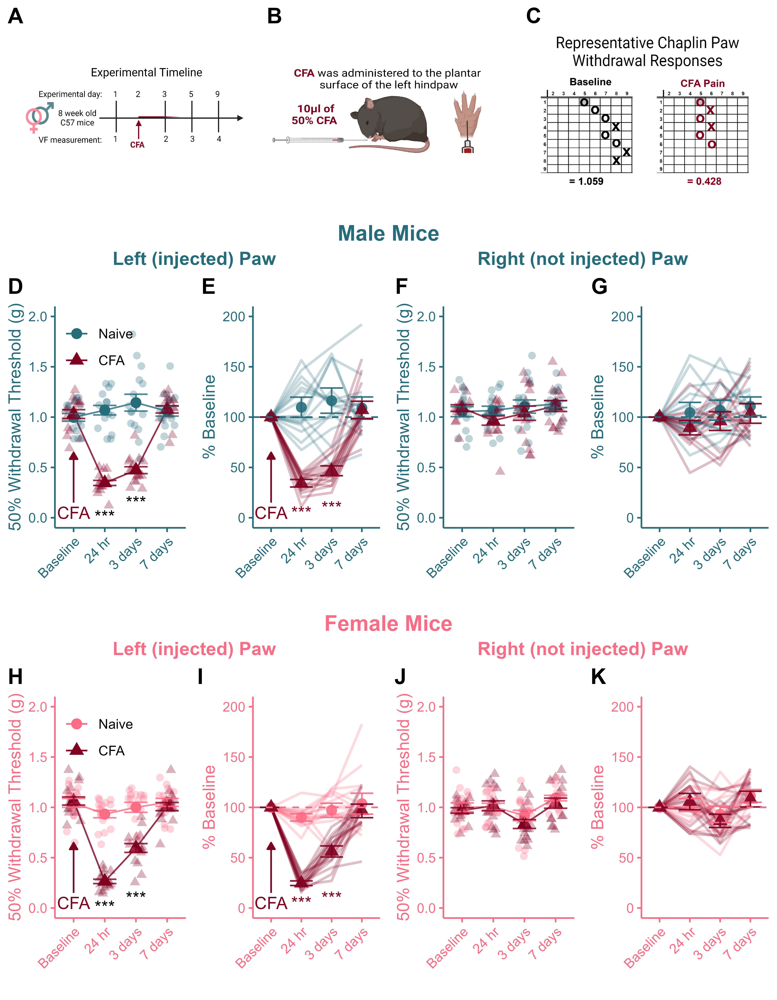

Figure 2 First thing’s first: Load packages
library(tidyverse) # For tidy text
library(reshape2) # For melting
library(ggpubr) # For making panels
library(png) # To call in .png images
library(rstatix) # for Stats2.1 Get Data & Wrangle
- Goal: create separte left and right data frames with the same column headers (the days of testing)
data <- read_csv("Data/CSV_4_R.csv")
data$CFA <- as.character(data$CFA)
data$CFA <- factor(data$CFA, levels=unique(data$CFA))
female_data <- subset(data[data$Sex == "Female", 1:11, ])
female_left <- subset(female_data[ ,1:4])
female_left$hr_24 <- female_data$hr_24.L
female_left$days_3 <- female_data$days_3.L
female_left$days_7 <- female_data$days_7.L
female_right <- subset(female_data[ ,1:3 ])
female_right$Baseline <- female_data$BL_R
female_right$hr_24 <- female_data$hr_24.R
female_right$days_3 <- female_data$days_3.R
female_right$days_7 <- female_data$days_7.R
male_data <- subset(data[data$Sex == "Male", 1:11, ])
male_left <- subset(male_data[ ,1:4])
male_left$hr_24 <- male_data$hr_24.L
male_left$days_3 <- male_data$days_3.L
male_left$days_7 <- male_data$days_7.L
male_right <- subset(male_data[ ,1:3])
male_right$Baseline <- male_data$BL_R
male_right$hr_24 <- male_data$hr_24.R
male_right$days_3 <- male_data$days_3.R
male_right$days_7 <- male_data$days_7.R2.2 Define functions
- Write two functions: One for absolute VF values, the second for % Baseline.
- Use these functions repeatedly to create 8 (total) charts for the panel.
2.3 CFA_Recover_Lines
CFA_Recover_Lines <- function(input,sex_colour){
colnames(input) <- c("ID", "Sex", "CFA", "Baseline", "24 hr", "3 days", "7 days")
a <- subset(input[-1])
means <- a %>%
group_by(`CFA`) %>%
summarise_at(vars(`Baseline`, `24 hr`, `3 days`, `7 days`), list(name=mean))
colnames(means) <- c("CFA", "Baseline", "24 hr", "3 days", "7 days")
means <- as.data.frame(means)
m_means <- melt(means)
sd <- a %>%
group_by(`CFA`) %>%
summarise_at(vars(`Baseline`, `24 hr`, `3 days`, `7 days`), list(name="sd"))
se <- sd / sqrt(15)
se$CFA <- sd$CFA
colnames(se) <- c("CFA", "Baseline", "24 hr", "3 days", "7 days")
se <- as.data.frame(se)
m_se <- melt(se)
m_se$mean <- m_means$value
a <- subset(a[-1])
a <- as.data.frame(a)
m_a <- melt(a)
b <- ggplot()+
geom_line(data=m_means, aes(x=variable, y=value, group=CFA, colour=CFA), alpha=0.8)+
scale_colour_manual(values = c(sex_colour, "#800020"))+
geom_point(data=m_means, aes(x=variable, y=value, colour=CFA, shape=CFA), size=3)+
scale_colour_manual(values = c(sex_colour, "#800020"))+
geom_jitter(data=m_a, aes(x=variable, y=value, group=CFA, colour=CFA, shape=CFA), width=0.25,height=0, size=2, alpha=0.3)+
scale_colour_manual(values = c(sex_colour, "#800020"))+
geom_errorbar(data=m_se, aes(x=variable, ymin=mean-value, ymax=mean+value, colour=CFA), width=0.75, alpha=0.8)+
scale_fill_manual(values = c(sex_colour, "#800020"))+
theme_classic()+
scale_y_continuous(expand = c(0, 0), limits= c(0,NA))+
theme(plot.title = element_text(hjust = 0.5))+
theme(legend.position="none")+
theme(axis.title.x=element_text(colour=sex_colour))+
theme(axis.title.y=element_text(colour=sex_colour))+
theme(axis.text.x=element_text(colour=sex_colour))+
theme(axis.text.y=element_text(colour=sex_colour))+
theme(axis.text.x=element_text(angle=45, hjust=1))+
theme(axis.line = element_line(colour=sex_colour))+
theme(axis.ticks = element_line(colour=sex_colour))+
labs(y = "50% Withdrawal Threshold (g)",
x = "",
title= ""
)+
ylim(0,2)
return(b)
}2.4 Individuals_lines
individuals_lines <- function(input,sex_colour){
colnames(input) <- c("ID", "Sex", "CFA", "Baseline", "24 hr", "3 days", "7 days")
a <- subset(input[-2])
b <- as.data.frame(a)
b$`24 hr` <- (b$`24 hr`/b$Baseline)*100
b$`3 days` <- (b$`3 days`/b$Baseline)*100
b$`7 days` <- (b$`7 days`/b$Baseline)*100
b$Baseline <- 100
c <- melt(b, id.vars = c("ID", "CFA"))
means <- b %>%
group_by(`CFA`) %>%
summarise_at(vars(`Baseline`, `24 hr`, `3 days`, `7 days`), list(name=mean))
colnames(means) <- c("CFA", "Baseline", "24 hr", "3 days", "7 days")
means <- as.data.frame(means)
m_means <- melt(means)
sd <- b %>%
group_by(`CFA`) %>%
summarise_at(vars(`Baseline`, `24 hr`, `3 days`, `7 days`), list(name="sd"))
se <- sd / sqrt(7)
se$CFA <- sd$CFA
colnames(se) <- c("CFA", "Baseline", "24 hr", "3 days", "7 days")
se <- as.data.frame(se)
se$CFA <- sd$CFA
m_se <- melt(se)
m_se$mean <- m_means$value
d <- ggplot(data=c, aes(x=variable, y=value, colour=CFA))+
geom_line(data=c, group=c$ID, size=.8, alpha=0.25)+
scale_colour_manual(values = c(sex_colour, "#800020"))+
geom_point(data=m_se, aes(x=variable, y=mean, shape = CFA), size = 3, alpha=0.9)+
geom_errorbar(data=m_se, aes(x=variable, ymin=mean-value, ymax=mean+value), alpha =0.9, width=0.75)+
theme_classic()+
theme(plot.title = element_text(hjust = 0.5))+
theme(legend.position="left")+
theme(axis.title.x=element_text(colour=sex_colour))+
theme(axis.title.y=element_text(colour=sex_colour))+
theme(axis.text.x=element_text(colour=sex_colour))+
theme(axis.text.y=element_text(colour=sex_colour))+
theme(axis.text.x=element_text(angle=45, hjust=1))+
theme(axis.line = element_line(colour=sex_colour))+
theme(axis.ticks = element_line(colour=sex_colour))+
theme(legend.position = "none")+
geom_hline(yintercept=100, linetype="dashed", colour=sex_colour)+
labs(x = " ",
y = "% Baseline",
title = "")+
ylim(0,200)
return(d)
}2.5 Generate charts
a <- CFA_Recover_Lines(female_left, "#FC6C85")
b <- CFA_Recover_Lines(female_right, "#FC6C85")
c <- CFA_Recover_Lines(male_left, "#256D7B")
d <- CFA_Recover_Lines(male_right, "#256D7B")
e <- individuals_lines(female_left, "#FC6C85")
f <- individuals_lines(female_right, "#FC6C85")
g <- individuals_lines(male_left, "#256D7B")
h <- individuals_lines(male_right, "#256D7B")2.7 Call in cartoons
timeline <- readPNG("cartoons/fig.1_timeline.png")
mouse <- readPNG("cartoons/fig.1_mouse.png")
VF <- readPNG("cartoons/fig.1_VF.png")
AA <- ggplot()+
background_image(timeline)+
coord_equal(ratio=0.4)+
theme(panel.background = element_rect(fill="#FFFFFF",colour="#FFFFFF"))+
theme(plot.background = element_rect(fill = "#FFFFFF", colour="#FFFFFF"))
AB <- ggplot() +
background_image(mouse)+
coord_equal(ratio=0.4)+
theme(panel.background = element_rect(fill="#FFFFFF",colour="#FFFFFF"))+
theme(plot.background = element_rect(fill = "#FFFFFF", colour="#FFFFFF"))
AC <- ggplot() +
background_image(VF)+
coord_equal(ratio=0.75)+
theme(panel.background = element_rect(fill="#FFFFFF",colour="#FFFFFF"))+
theme(plot.background = element_rect(fill = "#FFFFFF", colour="#FFFFFF"))
cartoons <- ggarrange(AA,AB,AC,
nrow=1,ncol=3,
labels = c("A","B","C"))
cartoons
2.8 Add significance indicators to left paw graphs.
C <- c +
annotate("segment",x=1,y=.15,xend=1,yend= .65,colour="#800020",arrow=arrow(type="closed", length=unit(0.06,"npc")))+
annotate("text", x=1,y=.05,label="CFA", colour="#800020")+
annotate("text",x=c(2,3),y=c(0.01,0.15),label=c("***"),size=4)+
theme(legend.justification = c(0,0.8),legend.position=c(0,1))+
theme(legend.background=element_rect(fill="transparent"))+
labs(color=" ",
shape=" ")
G <- g +
annotate("segment",x=1,y=15,xend=1,yend= 65,colour="#800020",arrow=arrow(type="closed", length=unit(0.06,"npc")))+
annotate("text", x=1,y=5,label="CFA", colour="#800020")+
annotate("text",x=c(2,3),y=c(5,10),label=c("***"),size=4, colour="#800020")
A <- a +
annotate("segment",x=1,y=.15,xend=1,yend= .65,colour="#800020",arrow=arrow(type="closed", length=unit(0.06,"npc")))+
annotate("text", x=1,y=.05,label="CFA", colour="#800020")+
theme(legend.justification = c(0,0.8),legend.position=c(0,1))+
theme(legend.background=element_rect(fill="transparent"))+
labs(color=" ",
shape=" ")+
annotate("text",x=c(2,3),y=c(0.01,0.1),label=c("***"),size=4)
E <- e +
annotate("segment",x=1,y=15,xend=1,yend= 65,colour="#800020",arrow=arrow(type="closed", length=unit(0.06,"npc")))+
annotate("text", x=1,y=5,label="CFA", colour="#800020")+
annotate("text",x=c(2,3),y=c(5,10),label=c("***"),size=4, colour="#800020")2.9 Arrange pieces of the Fig.1 Panel
M_L <- ggarrange(C,G,
nrow=1,ncol=2,
labels=c("D","E"))
M_L <- annotate_figure(M_L, top = text_grob("Left (injected) Paw", color="#256D7B",face="bold",size="12"))
M_R <- ggarrange(d,h,
nrow=1,ncol=2,
labels=c("F","G"))
M_R <- annotate_figure(M_R, top = text_grob("Right (not injected) Paw", color="#256D7B",face="bold",size="12"))
F_L <- ggarrange(A,E,
nrow=1,ncol=2,
labels=c("H","I"))
F_L <- annotate_figure(F_L, top = text_grob("Left (injected) Paw", color="#FC6C85",face="bold",size="12"))
F_R <- ggarrange(b,f,
nrow=1,ncol=2,
labels=c("J","K"))
F_R <- annotate_figure(F_R, top = text_grob("Right (not injected) Paw", color="#FC6C85",face="bold",size="12"))
male <- ggarrange(M_L,M_R,
ncol=2,nrow=1)
male <- annotate_figure(male, top = text_grob("Male Mice", color="#256D7B", face="bold",size="14"))
female <- ggarrange(F_L,F_R,
ncol=2,nrow=1)
female <- annotate_figure(female, top = text_grob("Female Mice", color = "#FC6C85", face="bold",size="14"))
panel <- ggarrange(male,female,
ncol=1,nrow=2,
heights = c(3,3))
final_panel <- ggarrange(cartoons,panel,
nrow=2,ncol=1,
heights = c(2.25,8))2.10 Save the Panel as a high quality .png image
{kind=link}
- Also save as a .tiff file when ready to publish.
ggsave(filename="Figs/3_VF_CFA_Recovery.png",final_panel, height=9,width=7,dpi=700,bg="white")
ggsave(filename="Figs/tiffs/3_VF_CFA_Recovery.tiff",final_panel,height=9,width=7,dpi=700,bg="white")
2.11 Statistical Analyses
# Select the left paws
left_paws <- rbind(female_left,male_left)
# Switch to long form
a <- left_paws %>%
melt(id.vars=c("ID","Sex","CFA"))
# Run RM anova on the 4 days of VF measuremenets
b <- anova_test(data=a, dv=value,wid=ID,between=c(CFA,Sex),within=variable,effect.size="pes")
knitr::kable(get_anova_table(b))| Effect | DFn | DFd | F | p | p<.05 | pes |
|---|---|---|---|---|---|---|
| CFA | 1 | 60 | 128.271 | 0.000 | * | 0.681 |
| Sex | 1 | 60 | 1.211 | 0.275 | 0.020 | |
| variable | 3 | 180 | 99.726 | 0.000 | * | 0.624 |
| CFA:Sex | 1 | 60 | 1.314 | 0.256 | 0.021 | |
| CFA:variable | 3 | 180 | 91.678 | 0.000 | * | 0.604 |
| Sex:variable | 3 | 180 | 2.651 | 0.050 | 0.042 | |
| CFA:Sex:variable | 3 | 180 | 3.570 | 0.015 | * | 0.056 |
# Run two way ANOVAs for males and females separately:
## Males
a %>%
filter(Sex == "Male") %>%
anova_test(dv=value,wid=ID,between=CFA,within=variable,effect.size = "pes")## ANOVA Table (type II tests)
##
## $ANOVA
## Effect DFn DFd F p p<.05 pes
## 1 CFA 1 30 74.990 0.00000000117000000000 * 0.714
## 2 variable 3 90 31.478 0.00000000000005240000 * 0.512
## 3 CFA:variable 3 90 47.439 0.00000000000000000176 * 0.613
##
## $`Mauchly's Test for Sphericity`
## Effect W p p<.05
## 1 variable 0.897 0.681
## 2 CFA:variable 0.897 0.681
##
## $`Sphericity Corrections`
## Effect GGe DF[GG] p[GG] p[GG]<.05 HFe
## 1 variable 0.93 2.79, 83.67 0.0000000000003530000 * 1.035
## 2 CFA:variable 0.93 2.79, 83.67 0.0000000000000000242 * 1.035
## DF[HF] p[HF] p[HF]<.05
## 1 3.1, 93.11 0.00000000000005240000 *
## 2 3.1, 93.11 0.00000000000000000176 *### Follow up for males:
a %>%
filter(Sex == "Male") %>%
group_by(variable) %>%
pairwise_t_test(value~CFA,p.adjust.method = "bonferroni")## # A tibble: 4 × 10
## variable .y. group1 group2 n1 n2 p p.signif p.adj
## * <fct> <chr> <chr> <chr> <int> <int> <dbl> <chr> <dbl>
## 1 BL_L value Naive CFA 16 16 5.68e- 1 ns 5.68e- 1
## 2 hr_24 value Naive CFA 16 16 1.22e-14 **** 1.22e-14
## 3 days_3 value Naive CFA 16 16 1.46e- 8 **** 1.46e- 8
## 4 days_7 value Naive CFA 16 16 7.67e- 1 ns 7.67e- 1
## # ℹ 1 more variable: p.adj.signif <chr>## Females
a %>%
filter(Sex == "Female") %>%
anova_test(dv=value,wid=ID,between=CFA,within=variable,effect.size="pes")## ANOVA Table (type II tests)
##
## $ANOVA
## Effect DFn DFd F p p<.05 pes
## 1 CFA 1 30 53.808 0.0000000359999999999999981061 * 0.642
## 2 variable 3 90 84.569 0.0000000000000000000000000427 * 0.738
## 3 CFA:variable 3 90 47.938 0.0000000000000000013200000000 * 0.615
##
## $`Mauchly's Test for Sphericity`
## Effect W p p<.05
## 1 variable 0.507 0.002 *
## 2 CFA:variable 0.507 0.002 *
##
## $`Sphericity Corrections`
## Effect GGe DF[GG] p[GG] p[GG]<.05 HFe
## 1 variable 0.754 2.26, 67.88 0.0000000000000000000289 * 0.819
## 2 CFA:variable 0.754 2.26, 67.88 0.0000000000000135000000 * 0.819
## DF[HF] p[HF] p[HF]<.05
## 1 2.46, 73.7 0.000000000000000000000841 *
## 2 2.46, 73.7 0.000000000000001180000000 *### Follow up for Female:
a %>%
filter(Sex == "Female") %>%
group_by(variable) %>%
pairwise_t_test(value~CFA,p.adjust.method = "bonferroni")## # A tibble: 4 × 10
## variable .y. group1 group2 n1 n2 p p.signif p.adj
## * <fct> <chr> <chr> <chr> <int> <int> <dbl> <chr> <dbl>
## 1 BL_L value Naive CFA 16 16 7.49e- 1 ns 7.49e- 1
## 2 hr_24 value Naive CFA 16 16 1.95e-16 **** 1.95e-16
## 3 days_3 value Naive CFA 16 16 5.94e- 7 **** 5.94e- 7
## 4 days_7 value Naive CFA 16 16 4.46e- 1 ns 4.46e- 1
## # ℹ 1 more variable: p.adj.signif <chr># Follow up the significant interaction using piarwise comparisons in Two ways:
## Effect of CFA on each day of testing split by by Sex:
a %>%
group_by(Sex,variable) %>%
pairwise_t_test(value~CFA,p.adjust.method = "bonferroni")## # A tibble: 8 × 11
## Sex variable .y. group1 group2 n1 n2 p p.signif p.adj
## * <chr> <fct> <chr> <chr> <chr> <int> <int> <dbl> <chr> <dbl>
## 1 Female BL_L value Naive CFA 16 16 7.49e- 1 ns 7.49e- 1
## 2 Female hr_24 value Naive CFA 16 16 1.95e-16 **** 1.95e-16
## 3 Female days_3 value Naive CFA 16 16 5.94e- 7 **** 5.94e- 7
## 4 Female days_7 value Naive CFA 16 16 4.46e- 1 ns 4.46e- 1
## 5 Male BL_L value Naive CFA 16 16 5.68e- 1 ns 5.68e- 1
## 6 Male hr_24 value Naive CFA 16 16 1.22e-14 **** 1.22e-14
## 7 Male days_3 value Naive CFA 16 16 1.46e- 8 **** 1.46e- 8
## 8 Male days_7 value Naive CFA 16 16 7.67e- 1 ns 7.67e- 1
## # ℹ 1 more variable: p.adj.signif <chr>## Effect of Sex on each day of testing split by CFA
a %>%
group_by(CFA,variable) %>%
pairwise_t_test(value~Sex,p.adjust.method = "bonferroni")## # A tibble: 8 × 11
## CFA variable .y. group1 group2 n1 n2 p p.signif p.adj
## * <fct> <fct> <chr> <chr> <chr> <int> <int> <dbl> <chr> <dbl>
## 1 Naive BL_L value Female Male 16 16 0.408 ns 0.408
## 2 Naive hr_24 value Female Male 16 16 0.0254 * 0.0254
## 3 Naive days_3 value Female Male 16 16 0.139 ns 0.139
## 4 Naive days_7 value Female Male 16 16 0.871 ns 0.871
## 5 CFA BL_L value Female Male 16 16 0.571 ns 0.571
## 6 CFA hr_24 value Female Male 16 16 0.017 * 0.017
## 7 CFA days_3 value Female Male 16 16 0.0288 * 0.0288
## 8 CFA days_7 value Female Male 16 16 0.194 ns 0.194
## # ℹ 1 more variable: p.adj.signif <chr>## Effect of day within each of the 4 groups (i.e., the same thing as the % BL stat..)
### Only read & interpret measurements relative to BASELINE
b <- a %>% group_by(CFA,Sex) %>%
pairwise_t_test(value~variable,p.adjust.method = "bonferroni")
print(b,n=24)## # A tibble: 24 × 11
## Sex CFA .y. group1 group2 n1 n2 p p.signif p.adj
## * <chr> <fct> <chr> <chr> <chr> <int> <int> <dbl> <chr> <dbl>
## 1 Female Naive value BL_L hr_24 16 16 6.03e- 2 ns 3.62e- 1
## 2 Female Naive value BL_L days_3 16 16 4.52e- 1 ns 1 e+ 0
## 3 Female Naive value hr_24 days_3 16 16 2.52e- 1 ns 1 e+ 0
## 4 Female Naive value BL_L days_7 16 16 9.36e- 1 ns 1 e+ 0
## 5 Female Naive value hr_24 days_7 16 16 5.06e- 2 ns 3.04e- 1
## 6 Female Naive value days_3 days_7 16 16 4.05e- 1 ns 1 e+ 0
## 7 Male Naive value BL_L hr_24 16 16 3.66e- 1 ns 1 e+ 0
## 8 Male Naive value BL_L days_3 16 16 6.7 e- 2 ns 4.02e- 1
## 9 Male Naive value hr_24 days_3 16 16 3.43e- 1 ns 1 e+ 0
## 10 Male Naive value BL_L days_7 16 16 4.33e- 1 ns 1 e+ 0
## 11 Male Naive value hr_24 days_7 16 16 9.04e- 1 ns 1 e+ 0
## 12 Male Naive value days_3 days_7 16 16 2.86e- 1 ns 1 e+ 0
## 13 Female CFA value BL_L hr_24 16 16 1.10e-22 **** 6.59e-22
## 14 Female CFA value BL_L days_3 16 16 7.23e-13 **** 4.34e-12
## 15 Female CFA value hr_24 days_3 16 16 2.18e- 8 **** 1.31e- 7
## 16 Female CFA value BL_L days_7 16 16 2.8 e- 1 ns 1 e+ 0
## 17 Female CFA value hr_24 days_7 16 16 3.48e-21 **** 2.09e-20
## 18 Female CFA value days_3 days_7 16 16 5.07e-11 **** 3.04e-10
## 19 Male CFA value BL_L hr_24 16 16 1.25e-20 **** 7.5 e-20
## 20 Male CFA value BL_L days_3 16 16 1.01e-16 **** 6.06e-16
## 21 Male CFA value hr_24 days_3 16 16 1.17e- 2 * 6.99e- 2
## 22 Male CFA value BL_L days_7 16 16 3.38e- 1 ns 1 e+ 0
## 23 Male CFA value hr_24 days_7 16 16 5.52e-22 **** 3.31e-21
## 24 Male CFA value days_3 days_7 16 16 3.24e-18 **** 1.94e-17
## # ℹ 1 more variable: p.adj.signif <chr>